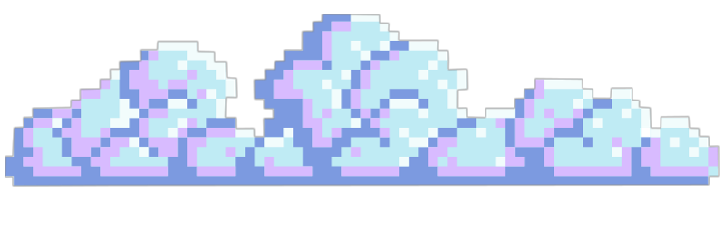
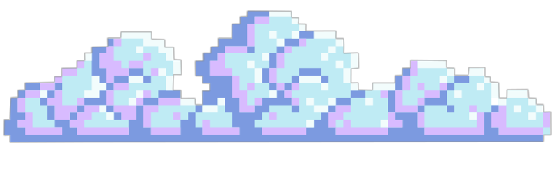

"My whole life, I’ve dreamt about being dead. I leave my body and I see myself from the above. A normal girl... Until I wake up."
- Ava
Warrior Nun s2:
In the end of season 1 we come to find out that the team has been tricked into unleashing a supposed "angel" into the world. Who goes by the name of Adriel. Thousand of years ago he was chose the first halo bearer and was assumed to be its owner. But instead we find out he has stolen it from his realm to serve his own purposes.
The team seperates to give Ava an opportunity to train more in preparation for her encounter with Adriel. Whilst in comparison Adriel has convinced the masses into following his religious cult, brainwashing them to do his bidding. Eventually an attack on the OCS (Order of the Cruciform Sword) worldwide, brings the team back together to find a way to stop Adriel and his plan to rule the world. This season was action packed and written really well to progressively answer questions we've all been wanting to know since season 1. The pacing has improved drastically as well as the amount of well choreographed fight scenes. There's romance, comedy and more importantly "Freewheeling secret ass kicking nuns". What's more to ask for.
The worldbuilding in this season has completely gotten me hooked there are still so many more unanswered questions and not enough episodes. The characters,have depth and there is a clear sense of development particularly in Ava this season who has grown in leaps and bounds. Far from the young woman who ran from reponsibilities every chance she got. Now she's willing to lead and make difficult decisions to protect the world but most importantly the people she loves.